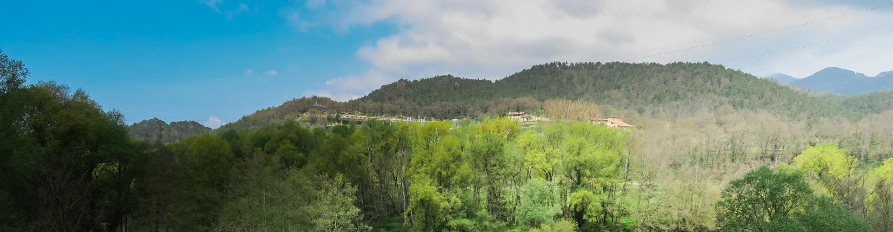

Ruta · Sant Joan
Itinerari fàcil però un pèl llarg, per la vora del Ter fins al pantà de Cal Gat i tornar. Primer per corriols obacs i després tornant seguint la Via Verda de la Ruta del Ferro i el Carbó. Gaudirem…